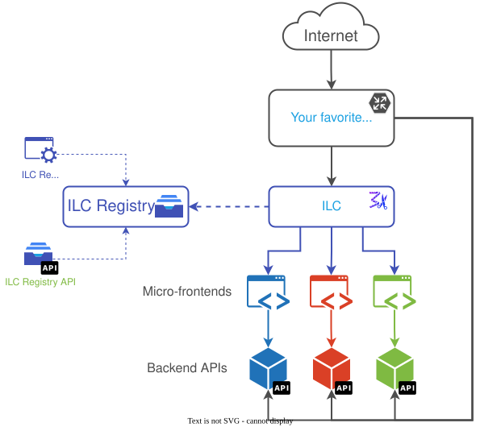

Home
Isomorphic Layout Composer (ILC) - a layout service that composes a web page from fragment services. It supports client/server-based page composition.
Its competitive advantage over other solutions is an isomorphic page composition. It means that ILC assembles a page on the server-side using apps that support Server-side rendering (SSR), and after that, the page is passed on the client-side, so the client-side rendering handles all further navigation.
This approach allows to combine advantages of the Micro Frontends, SPA, and Server-side rendering approaches.
This repository also contains an example of how you can create a frontend that is composed from multiple applications that work in concert and deliver a unified experience.
Why do I need ILC?⚓︎
Microservices get a lot of traction these days. They allow multiple teams to work independently, choose their technology stacks, and establish release cycles. Unfortunately, frontend development doesn't take full advantage of the microservices' benefits. The common practice for building websites is still "a monolith" - a single frontend codebase that consumes multiple APIs.
What if we introduce microservices on the frontend? It would allow frontend developers to work together with their backend counterparts on the same feature and independently deploy parts of the website ("fragments"), such as header, product, and footer. To bring microservices to the frontend, you need a layout service that can "stitch" a website out of fragments. This is where ILC comes into play.
Key features⚓︎
- 📦 Based on single-spa and TailorX - battle-tested solutions inside.
- 📱 Technology-agnostic - use it with React, Vue.js, Angular, etc.
- ⚙️ Server-side rendering (SSR) support - key advantage over competitors.
- 🗄 Built-in registry - add new apps, pages, or change configs and templates in a few clicks.
- ⚡️ Built for speed - server-side part of the system adds just ~17ms of latency
- 👨💻 Develop in production
- 🌐 Internationalization support - serve your clients from any country. Demo with a localized navbar
- 📡 Advanced features:
- 💲 Backed by Namecheap - we use it internally and plan to evolve it together with the community.
🚀 Quick start⚓︎
Demo website
For a quick preview, check out our demo website
To quickstart with ILC locally, follow the steps below:
- Clone the namecheap/ilc repository.
- Run
npm install- OPTIONAL Switch database to PostgreSQL by changing environment variable
DB_CLIENTtopgin servicesregistry_workerandregistry
- OPTIONAL Switch database to PostgreSQL by changing environment variable
-
Run
docker compose up -d. Wait for the process to complete:[+] Running 6/6 ⠿ Network ilc_default Created 0.1s ⠿ Container ilc-ilc-1 Started 0.8s ⠿ Container ilc-mysql-1 Started 0.8s ⠿ Container ilc-registry-1 Started 20.0s ⠿ Container ilc-demo-apps-1 Started 1.4s ⠿ Container ilc-registry_worker-1 Started 19.8s -
Run
docker compose run registry npm run seed. Wait for the process to complete:[+] Running 1/1 ⠿ Container ilc-mysql-1 Recreated 3.8s [+] Running 1/1 ⠿ Container ilc-mysql-1 Started 0.4s > registry@1.0.0 seed /codebase > knex --knexfile config/knexfile.ts seed:run Requiring external module ts-node/register Working directory changed to /codebase/config WARNING: NODE_ENV value of 'production' did not match any deployment config file names. WARNING: See https://github.com/lorenwest/node-config/wiki/Strict-Mode Ran 8 seed files -
Open your browser and navigate to ILC or Registry UI:
ILC: http://localhost:8233/Registry UI: http://localhost:4001/ (user:root, password:pwd)
Additional commands
- View logs:
docker compose logs -f --tail=10 - Shutdown local ILC:
docker compose down
You can find more information about demo applications for this quick start in the namecheap/ilc-demo-apps repository.
Architecture overview⚓︎

Repository structure⚓︎
The namecheap/ilc repository consists of the following parts:
ilc: code of the Isomorphic Layout Composerregistry: app that contains configuration that ILC uses: a list of micro-fragments, routes, etc.
Further reading⚓︎
- Overview
- Micro-frontend Types
- Step-By-Step lessons about apps development with ILC
- ILC to App interface
- ILC Registry
- Animation during reroute
- Global error handling
- Demo applications used in quick start
- SDK for ILC plugins development
- Compatibility with legacy UMD bundles
- Global API
- ILC transition hooks
- Multi-domains
- Public Path Problem
🔌 Adapters⚓︎
ILC relies on the adapters provided within the single-spa ecosystem to connect various frameworks. However, to ensure better integration with ILC, some of the original adapters were extended:
Notes⚓︎
@portal/ prefix⚓︎
ILC uses webpack (a static module bundler) to build each application for our micro-frontend approach. Webpack requires access to everything it needs to include in the bundle at build time. It means when an app imports a service (for example, planets import the fetchWithCache service), webpack tries to bundle the service into the planets bundle.
The built-in way to prevent this behavior is webpack externals.
This approach works well but to avoid adding a regex to each service ILC uses the @portal prefix to instruct both webpack and developers that the import is another micro-app/service/frontend.
Code splitting⚓︎
Code splitting is a complicated topic. In ILC, code splitting is even more complicated. The reason is that the webpack module format expects the loading of extra modules from the website root, which will always fail until a place from where to load extra modules is configured. In ILC, you can see an example of this approach in the demo people application.
Sockets timeout to fragments⚓︎
If you experience socket timeouts during requests to fragments, plese checkout this workaround https://github.com/namecheap/ilc/issues/444